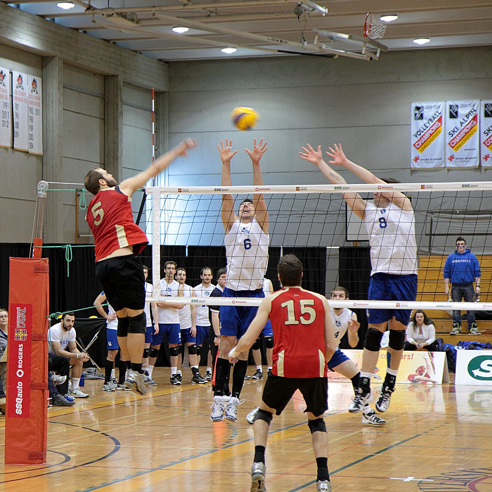
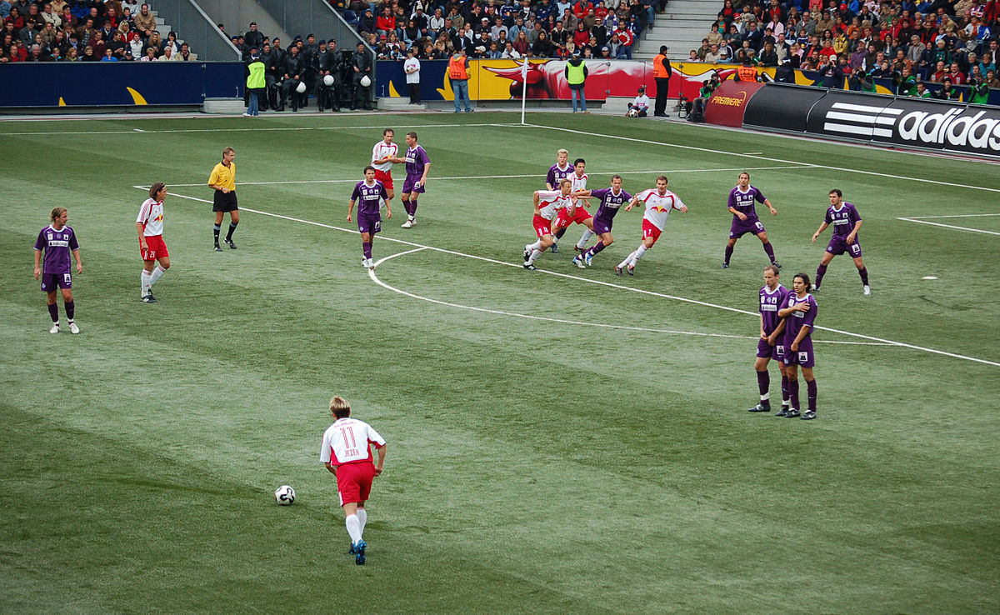

deportes
futbol-voleibol

deportes
atletismo-beisbol
futbol
,

Fernando Beltrán feliz y sorprendido
de que Almeyda lo coloque como el mejor de la Liga Mx EL técnico argentino
señaló que Beltrán actualmente es el más destacado del futbol mexicano.
voleibol
El seleccionador de voleibol de México, Jorge Azair, dio positivo por coronavirus
y fue internado en el Hospital Universitario de Monterrey, Nuevo León.
Además de la COVID-19, Azair padece linfoma Hodgkin, un tipo de cáncer que ataca el sistema linfático.
Azair fue el entrenador que puso de vuelta al voleibol mexicano en los Juegos Olímpicos,
al clasificarlo para las justas de Río 2016, luego de una ausencia que empezó tras la edición de México 1968.